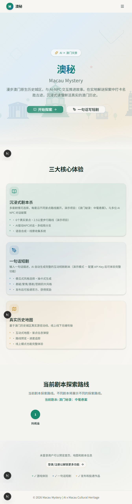
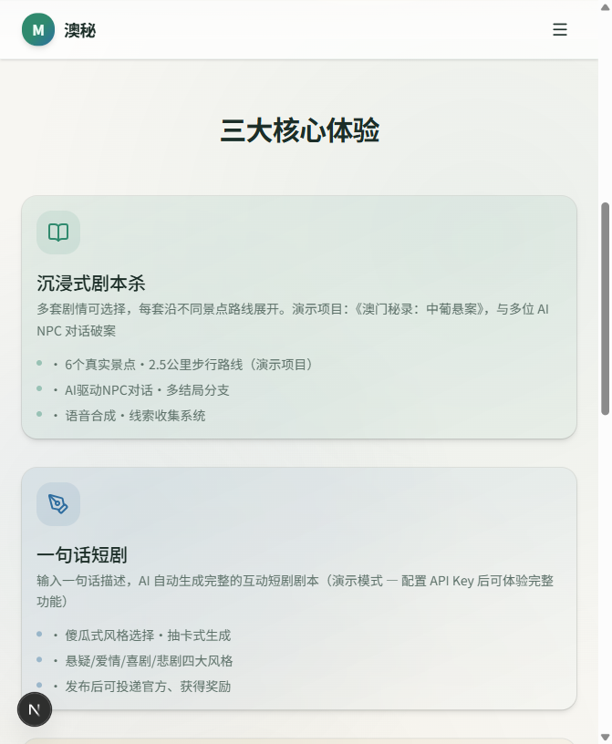
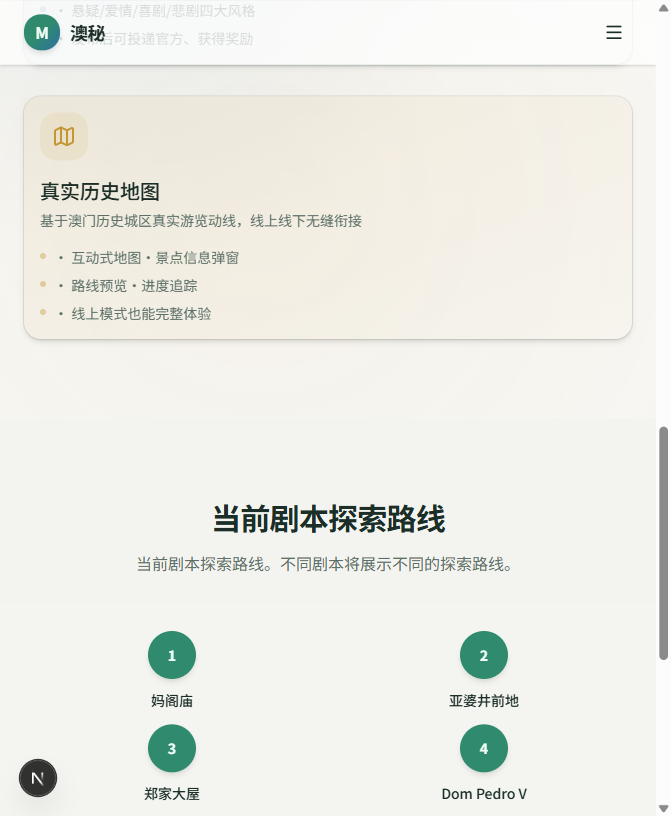
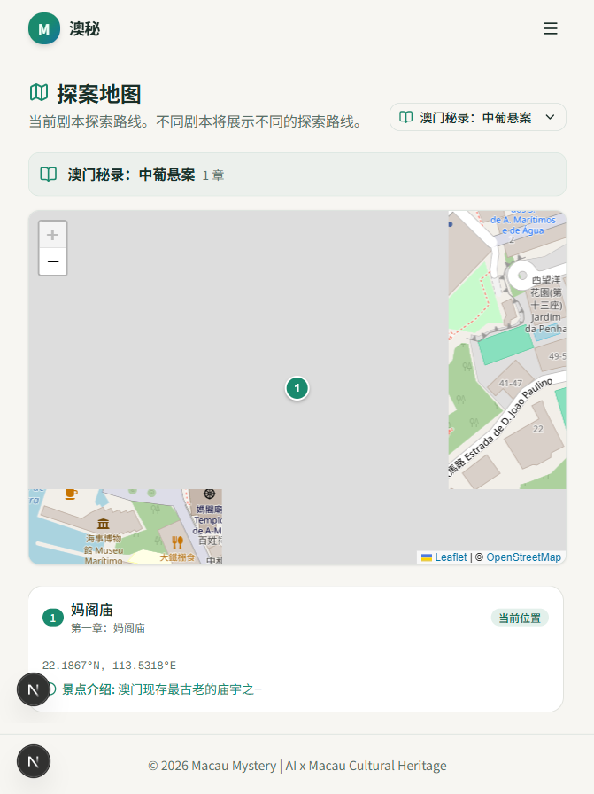
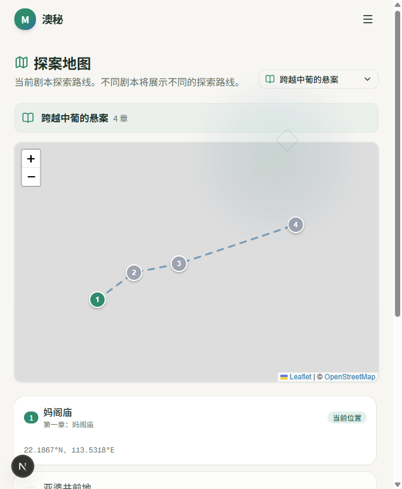
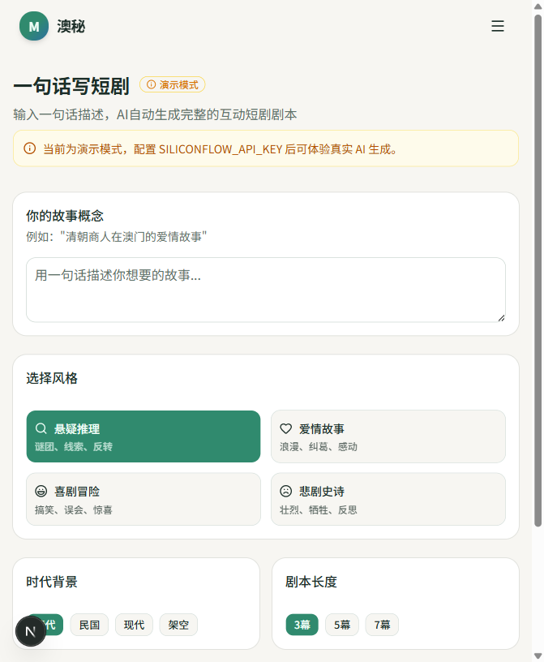
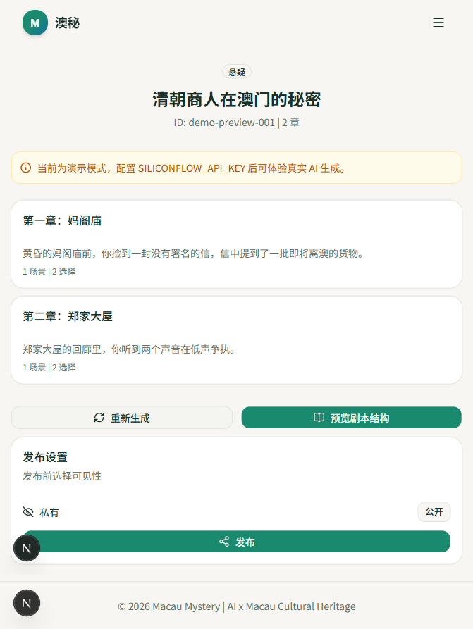
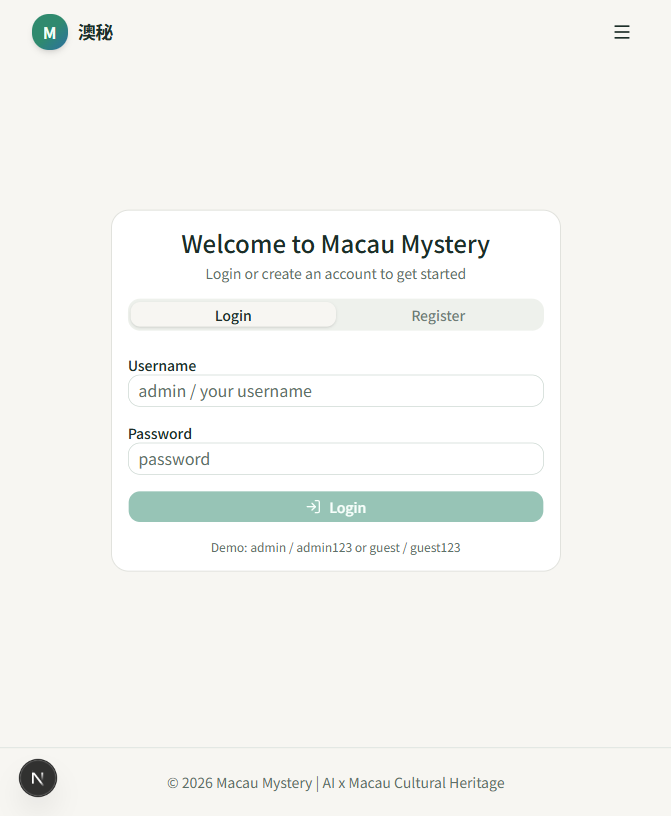

不是听导览，是亲临澳门历史城区当主角
↓ 向下滚动，开启你的探案之旅
从“看风景”到“演故事”，澳秘把澳门历史城区变成一座开放式沉浸式剧场。
剧本章节与真实 GPS 坐标绑定，首页与地图页均随当前发布剧本自动切换探索路线。
每幕采用预制视频 + 选项覆盖层的沉浸形式，视频末帧保持、选项浮现、线索预加载，推进到下一节点。
选择影响剧情分支，关键线索决定最终结局；支持分支汇合与 router 条件跳转。
输入一句创意描述即可生成含多幕、多选择的互动短剧结构，并可预览未来理想玩家效果。
地图页接入澳门六大名胜介绍接口，点击即可查看景点历史、文化背景与官方来源。
管理后台支持请求 S3 兼容对象存储的预签名上传 URL，直接上传视频与海报并注册入库。
从打开首页到深入剧情，每一步都有清晰的视觉引导。
淡雅的澳门地标天际线背景，搭配一句话定位，让用户 3 秒明白产品价值。

三大卡片分别展示：沉浸式剧本杀、一句话短剧、真实历史地图。每张卡片用 3 个要点降低理解成本。

“当前剧本探索路线”区域用时间轴形式展示当前剧本会经过的澳门名胜，让用户对行程有直观预期。

地图页从后端动态拉取已发布剧本。用户可在下拉框切换不同故事，地图会立即重绘对应的路线与标记。

选择《跨越中葡的悬案》后，地图立即展示 4 个章节组成的完整路线，虚线串联起妈阁庙到岗顶剧院的探索路径。

在创作页输入一句话描述，选择风格、时代、长度，即可生成一份结构完整的互动短剧。当前为演示模式，结果可直接预览。

生成结果页展示多幕剧情、每幕场景旁白与选择分支。点击“预览剧本结构”可查看结构弹窗，并切换到“理想效果演示”提前体验未来视频播放器的优化方向。

游客可体验首页、地图和基础剧情；登录后可保存进度、投稿作品、进入管理后台。支持注册与演示账号快速体验。

管理后台新增“Media Storage”入口，管理员可请求 S3/MinIO/R2 的预签名 PUT URL，直接上传视频与海报资源，完成后注册到后端以便剧本引用。
Request presigned upload URL